0준비물
크롬 브라우저 권장. 진행 화면을 띄워요.
TV나 빔프로젝터에 노트북을 연결해요. 소규모면 노트북 화면만으로도 돼요.
팀당 1~3대를 추천해요. 팀원은 번갈아 가며 하면 돼요.
노트북과 폰 모두 인터넷에 연결돼 있어야 해요. 폰은 와이파이든 LTE·5G든 상관없어요.
1진행자 가이드
① 진행 화면 열기
노트북 크롬에서 ddaboos2030.github.io/Arcade에 들어가 게임 진행하기를 누르세요.
화면 오른쪽 위에 방 코드 5자리가 나오고, 연결 상태가 ● 접속 0대 · 중계 2/2처럼 초록색이 되면 준비 완료예요.
💡 큰 화면에 띄울 때는 F를 눌러 전체 화면으로 바꾸세요.
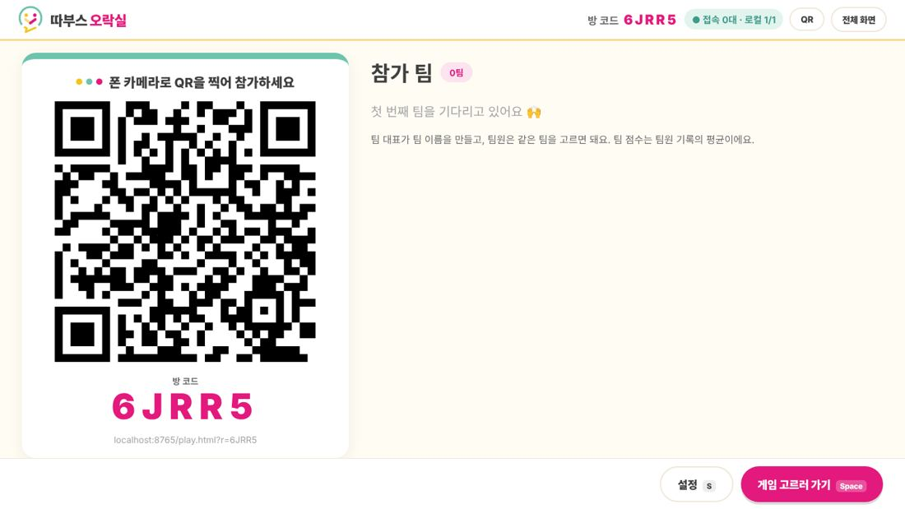
② 팀 참가 받기
참가자들이 폰 카메라로 큰 화면의 QR을 찍으면 참가 화면이 열려요. 팀 대표가 팀 이름을 만들고, 팀원은 같은 팀을 고르면 돼요.
들어온 팀이 오른쪽에 바로바로 나타나요. 팀은 최대 16팀까지예요.
💡 QR이 작으면 Q를 눌러 크게 띄우세요.
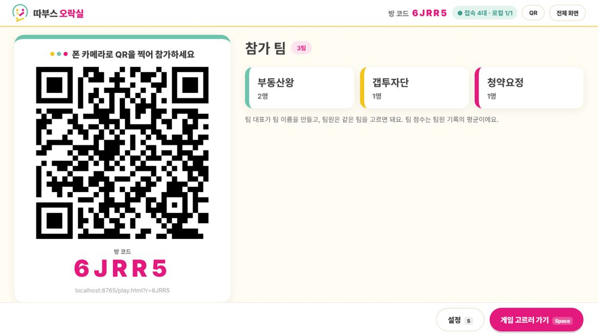
③ 게임 고르기
Space를 누르면 게임 선택 화면으로 넘어가요. 방향키(또는 클릭)로 게임을 고르고 다시 Space를 누르세요.
오른쪽에는 누적 점수가 항상 보여요.
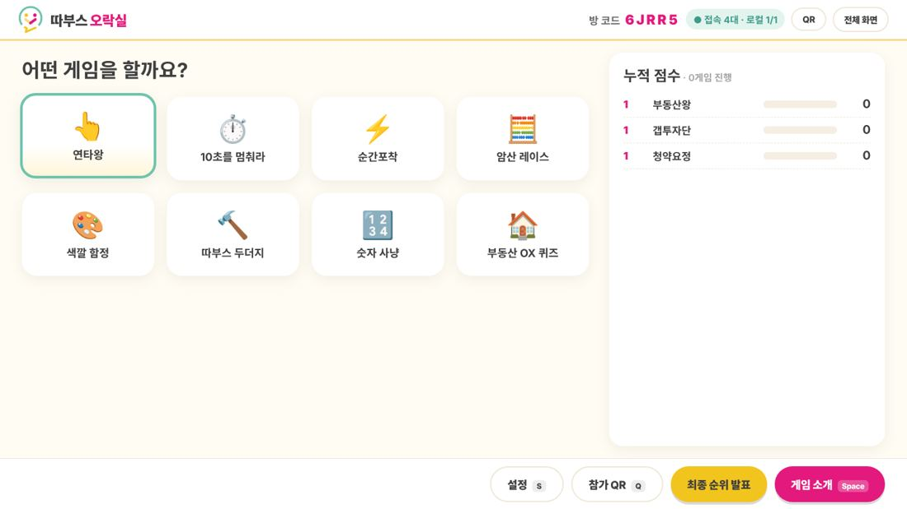
④ 게임 소개 → 3·2·1 → 실시간 중계
게임 규칙이 큰 화면과 폰에 함께 나와요. 설명이 끝나면 Space로 시작!
3·2·1 카운트다운 뒤 모든 폰에서 동시에 게임이 시작되고, 큰 화면에는 팀별 진행 상황이 막대그래프로 실시간 중계돼요.
모든 팀이 끝나면 자동으로 결과로 넘어가요. 늦는 팀이 있으면 Space로 바로 끝낼 수 있어요.
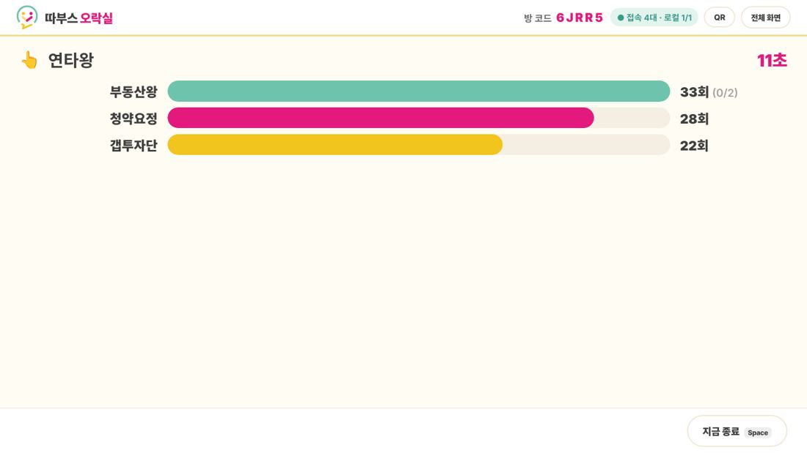
⑤ 결과 · 시상대
1·2·3등이 시상대에 올라가요. 점수는 전체 팀 수 − 순위 + 1점이에요. 예를 들어 5팀이면 1등 5점, 2등 4점…이에요. 동점이면 같은 순위이고, 참여하지 않은 팀은 0점이에요.
한 팀에 폰이 여러 대면 팀원 기록의 평균으로 순위를 매겨요.
결과가 이상하면 결과 취소를 누르면 그 게임 점수가 사라져요.
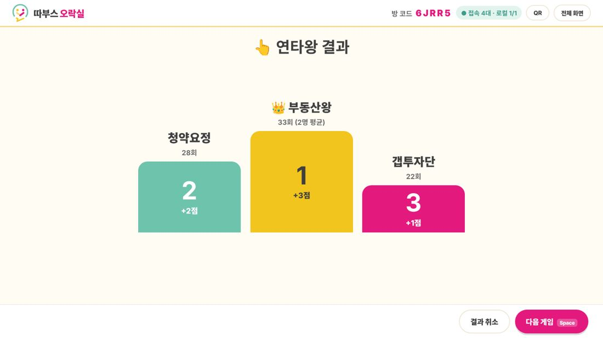
⑥ 최종 순위 발표
게임 선택 화면의 최종 순위 발표를 누르세요. Space를 누를 때마다 꼴찌부터 한 팀씩 공개되고, 마지막에 우승팀이 왕관과 함께 등장해요. 🎉
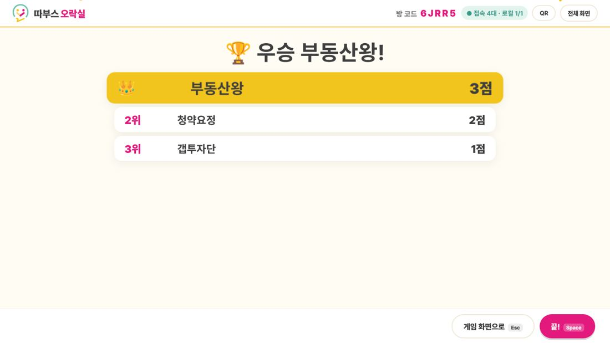
⑦ 설정 (S)
- 새 팀 만들기 허용/차단: 팀이 다 모이면 막아 두세요.
- 팀 이름 변경·삭제, 팀 미리 만들기
- 점수 보정: 장기자랑·응원상 같은 보너스 점수를 −1, +1, ± 버튼으로 줘요.
- 가상 팀 (리허설): 혼자서도 전체 흐름을 연습할 수 있어요. 행사 전에 지워 주세요.
- 새 방 만들기: 팀·점수를 모두 지우고 방 코드를 새로 받아요.
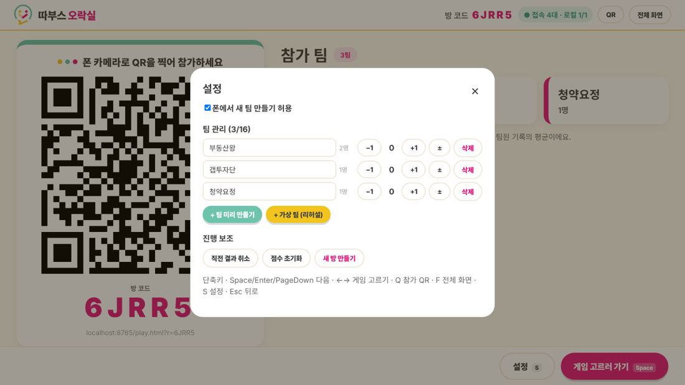
단축키
진행 노트북을 실수로 새로고침하거나 껐다 켜도 팀과 점수는 그대로 남아 있어요. 같은 노트북, 같은 브라우저로 다시 열면 돼요.
2참가자 가이드
진행자가 이 부분을 단톡방에 공유하거나 행사 시작 전에 읽어 주세요.
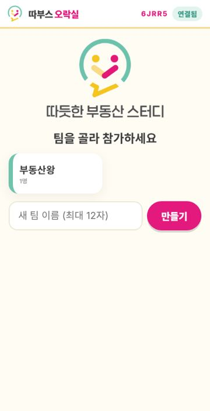
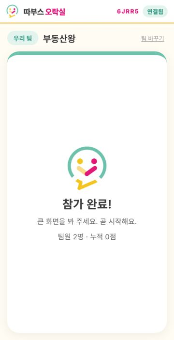
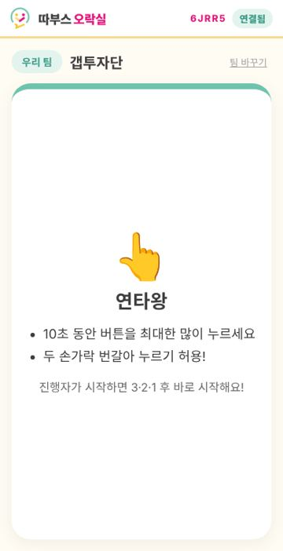
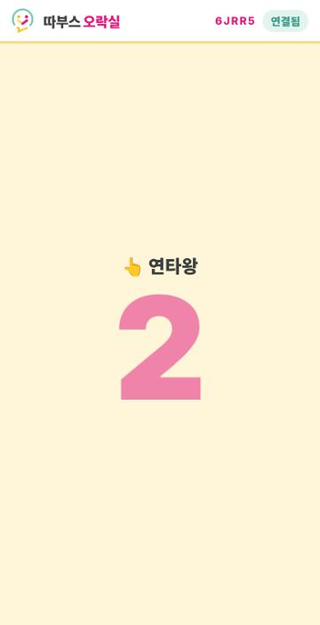
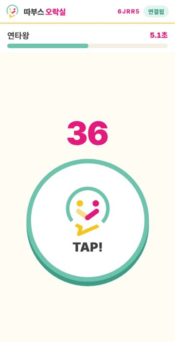
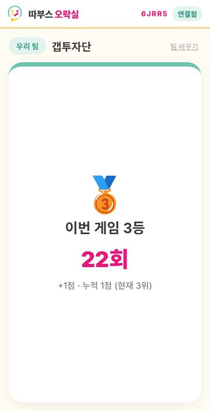
인터넷 주소창에 ddaboos2030.github.io/Arcade를 입력하고, 첫 화면 아래 칸에 큰 화면의 방 코드 5자리를 넣어 참가를 누르세요.
무음 모드면 효과음이 안 나요. 게임 중에 화면이 꺼지지 않게, 대기 중에는 가끔 화면을 터치해 주세요.
같은 폰, 같은 브라우저로 QR을 다시 찍으면 원래 팀으로 자동으로 돌아와요.
폰 화면 위쪽의 팀 바꾸기를 누르고 다시 고르세요.
3미니게임 8종
같은 판에서는 모든 폰에 같은 문제와 같은 순서가 나와서 공정해요.
버튼을 최대한 많이 누르기. 두 손가락 번갈아 누르기 허용!
3초 뒤 시계가 사라져요. 마음속으로 세다가 딱 10초에 STOP. 결과는 끝나고 공개!
화면이 핑크로 바뀌는 순간 터치. 5번 평균 반응속도로 겨뤄요. 미리 누르면 1초 벌칙.
덧셈·뺄셈·곱셈·나눗셈 4지선다. 많이 맞힐수록 1등. 틀리면 잠깐 멈춰요.
글자의 뜻 말고 글자 색깔을 고르기. "파랑"이 빨간 글씨면 → 빨강!
튀어나오는 따부스 로고를 잡으면 +1, 💣 폭탄을 누르면 −2.
1부터 16까지 순서대로 빠르게 누르기. 가장 빨리 끝낸 팀이 1등.
LTV·DSR, 등기부등본, 청약통장 등 부동산 상식 OX. 맞힌 개수 → 빨리 고른 순서.
4경품 추첨
시작 화면에서 경품 추첨을 누르세요. 폰 없이 큰 화면만 있으면 돼요.
- 참가자 명단에 한 줄에 한 명씩 이름을 넣어요. 쉼표로 구분해도 돼요. 번호표로 추첨하려면 번호로 채우기를 누르세요.
- 경품을
커피 쿠폰 x3처럼 적으면 위에서부터 차례로 추첨해요. - 위쪽에서 돌림판 · 슬롯머신 · 스포트라이트 중 하나를 골라요.
- 추첨하기(또는 Space)를 누르면 연출과 함께 당첨자가 나와요. 당첨자는 다음 추첨에서 자동으로 빠져요.
- 당첨자가 자리에 없으면 자리에 없음 → 다시 뽑기를 누르세요. 그 사람을 빼고 같은 경품을 다시 뽑아요.
- 끝나면 엑셀용 복사로 당첨자 목록을 붙여 넣을 수 있어요.
💡 당첨자는 먼저 공정한 난수로 정해지고, 연출은 그 결과에 맞춰 멈춰요. 후보가 많으면 "본선 진출" 연출을 거쳐요.
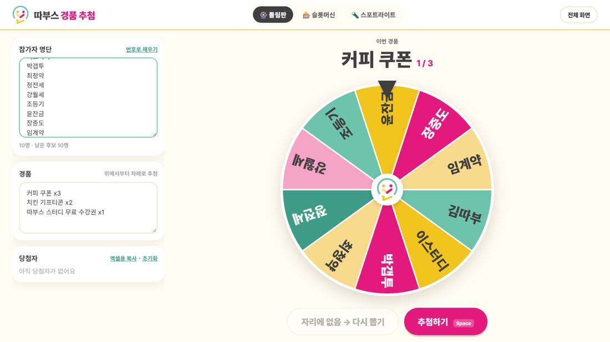
5문제 해결
진행 화면에 방 코드가 안 나와요 (-----로 보여요)
- 강력 새로고침을 해 보세요. 윈도우는 Ctrl+F5, 맥은 Cmd+Shift+R이에요. 예전 버전 파일이 남아 있으면 이렇게 해야 새 버전이 열려요.
- 최신 크롬이나 엣지로 열어 주세요. 인터넷 익스플로러는 지원하지 않아요.
- 그래도 안 되면 F12를 눌러 Console 탭에 나오는 빨간 글씨를 캡처해서 따부스 운영진에게 보내 주세요.
방 코드는 나오는데 오른쪽 위가 계속 "연결 중…"이에요
폰과 노트북은 공개 중계 서버(인터넷)를 거쳐 연결돼요. 회사·호텔 와이파이는 이 연결을 막는 경우가 있어요.
- 노트북을 휴대폰 핫스팟이나 다른 와이파이에 연결한 뒤 새로고침해 보세요.
- 중계 1/2처럼 하나만 연결돼도 정상 작동해요.
폰에서 "진행 화면에 연결하는 중이에요"에서 멈춰요
- 폰 화면 위쪽의 방 코드가 큰 화면의 방 코드와 같은지 확인하세요.
- 폰의 와이파이를 끄고 LTE·5G로 다시 열어 보세요. 회사 와이파이가 막는 경우가 많아요.
- 진행 노트북 화면이 열려 있어야 해요. 노트북이 절전 모드로 들어가지 않게 해 주세요.
게임이 시작됐는데 어떤 폰은 시작이 안 돼요
그 폰에서 페이지를 새로고침하면 진행 중인 게임에 바로 참여해요. 이미 늦었다면 그 판은 불참(0점)으로 처리되고, 다음 판부터 정상 참여할 수 있어요.
점수가 잘못 들어갔어요
결과 화면의 결과 취소 또는 설정(S)의 직전 결과 취소로 바로 앞 게임 점수를 되돌릴 수 있어요. 특정 팀만 고치려면 설정에서 −1 · +1 · ± 버튼을 쓰세요.
몇 명까지 참가할 수 있나요?
팀은 최대 16팀이에요. 폰은 50대 안팎까지 무난해요. 인원이 많으면 팀당 폰을 1~3대로 정하고 팀원이 번갈아 하게 해 주세요.
행사 중간에 노트북을 껐다 켜야 해요
같은 노트북, 같은 브라우저로 다시 게임 진행하기를 누르면 방 코드·팀·점수가 그대로 돌아와요. 폰들도 몇 초 안에 자동으로 다시 연결돼요.
✅ 행사 전 리허설 체크리스트
- 행사장 인터넷에서 진행 화면을 열고 중계 2/2(또는 1/2)가 뜨는지 확인
- 폰 1~2대로 QR 참가 → 연타왕 한 판 → 결과까지 해 보기
- 노트북을 큰 화면에 연결하고 F 전체 화면, 소리 출력 확인
- 노트북 절전 모드 끄기, 충전기 연결
- 리허설용 가상 팀은 설정에서 삭제하거나 새 방 만들기로 정리
- 경품 추첨 명단·경품 미리 입력해 두기